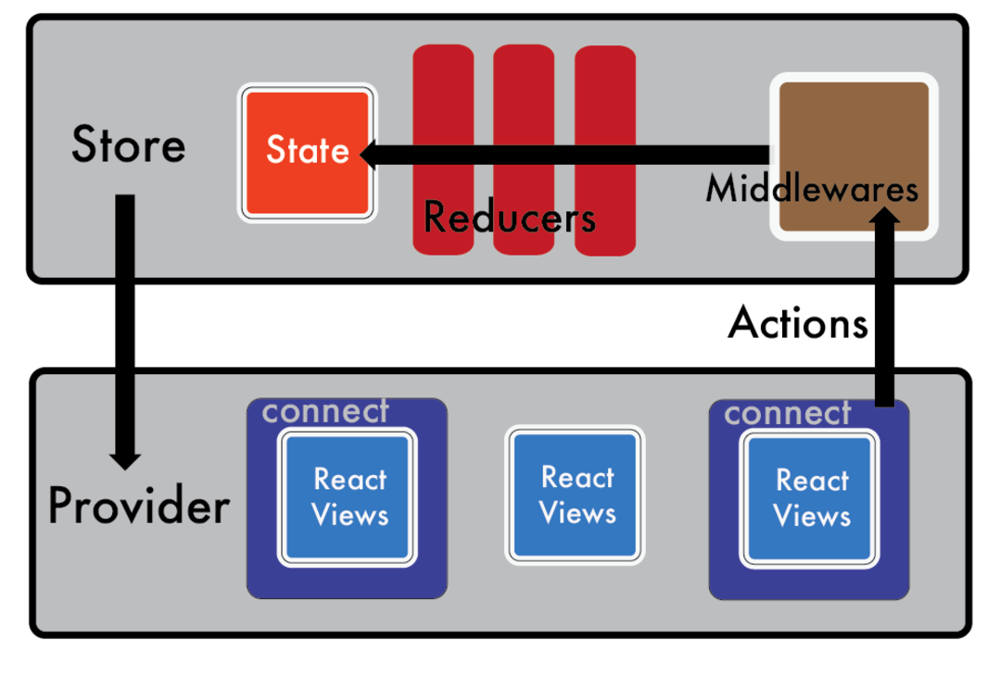
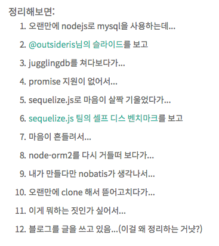
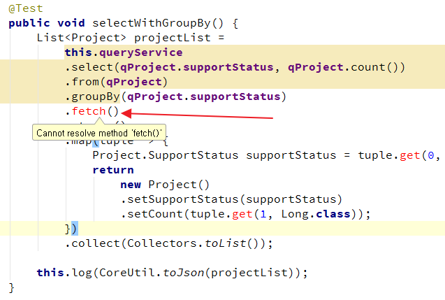
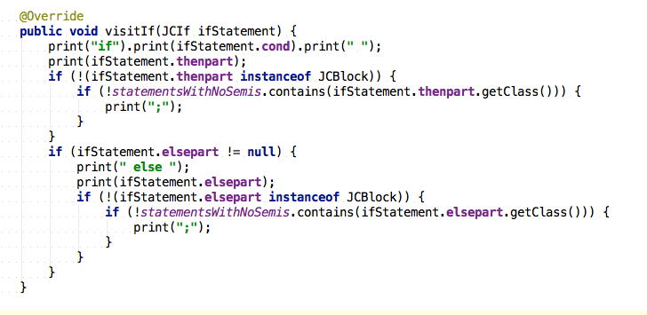
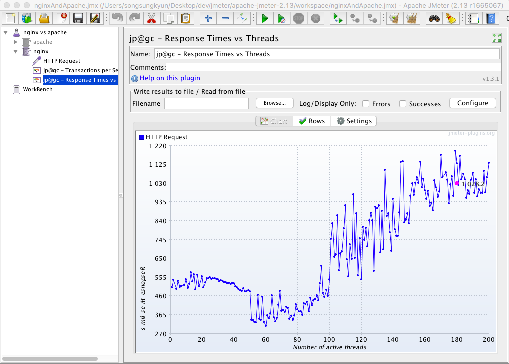
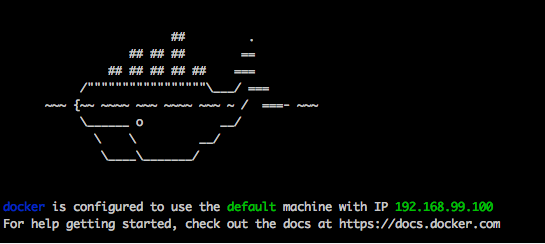
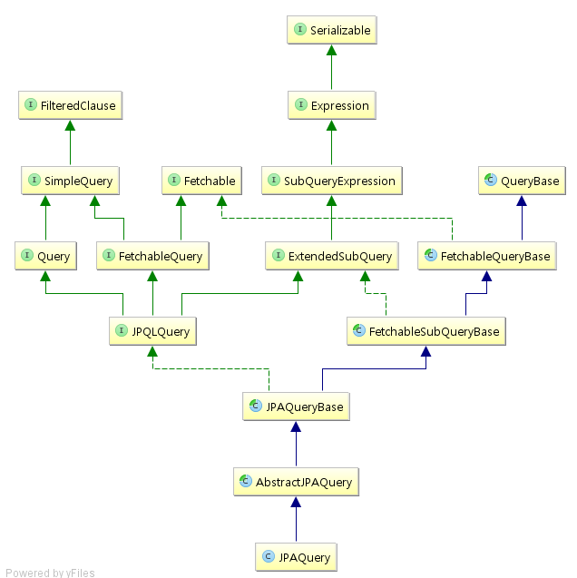
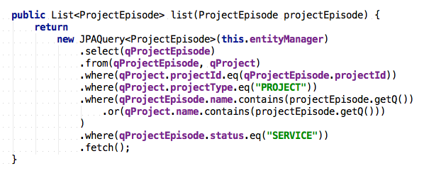

<!DOCTYPE html><html lang="en"><head><title>uuidcode</title>
<meta charset="utf-8" />
<meta http-equiv="Cache-Control" content="no-cache" />
<meta http-equiv="Expires" content="0" />
<meta http-equiv="Pragma" content="no-cache" />
<meta name="viewport" content="width=device-width, initial-scale=1.0" />
<meta name="description" content="" />
<meta name="author" content="" />
<link href="../bootstrap/css/bootstrap.css" rel="stylesheet" />
<link href="../bootstrap/css/bootstrap-responsive.css" rel="stylesheet" />
<link href="../css/shCore.css" rel="stylesheet" />
<link href="../css/shThemeDefault.css" rel="stylesheet" />
<script src="../bootstrap/js/jquery.js"></script>
<script src="../bootstrap/js/bootstrap-dropdown.js"></script>
<script src="../jqueryrolling/jquery.rolling.js"></script>
<script src="../interpark/jquery/lib/jquery/jquery.easydrag.js"></script>
<script src="../virtualform/json2.js"></script>
<script src="../virtualform/jquery.virtualform-0.1.js"></script>
<script src="../js/shCore.js"></script>
<script src="../js/shBrushJava.js"></script>
<script src="../js/shBrushSql.js"></script>
<script src="../js/shBrushPhp.js"></script>
<script src="../js/shBrushXml.js"></script>
<style type="text/css">
    .navbar-fixed-top {
        margin-bottom: 20px;
    }
</style>
<!-- Le HTML5 shim, for IE6-8 support of HTML5 elements -->
<!--[if lt IE 9]>
<script src="http://html5shim.googlecode.com/svn/trunk/html5.js"></script>
<![endif]-->
<script src="../js/youtube.js?v=1"></script>
<script>
    (function(i,s,o,g,r,a,m){i['GoogleAnalyticsObject']=r;i[r]=i[r]||function(){
        (i[r].q=i[r].q||[]).push(arguments)},i[r].l=1*new Date();a=s.createElement(o),
            m=s.getElementsByTagName(o)[0];a.async=1;a.src=g;m.parentNode.insertBefore(a,m)
    })(window,document,'script','//www.google-analytics.com/analytics.js','ga');

    ga('create', 'UA-49038982-1', 'uuidcode.github.io');
    ga('send', 'pageview');

</script>
<script type="text/javascript">
    jQuery(function () {
        SyntaxHighlighter.all()
    });
</script></head>
<body class="none">
<div class="navbar navbar-fixed-top"><div class="navbar-inner">
    <div class="container">
        <div class="nav">
            <li class="dropdown">
                <a class="dropdown-toggle" data-toggle="dropdown" href="#">Diary <b class="caret"></b></a>
                <ul class="dropdown-menu">
                    <li><a href="/images/2022.html">2022</a></li>
                    <li><a href="/images/2021.html">2021</a></li>
                    <li><a href="/images/2020.html">2020</a></li>
                    <li><a href="/images/2019.html">2019</a></li>
                    <li><a href="/images/2018.html">2018</a></li>
                    <li><a href="/images/2017.html">2017</a></li>
                    <li><a href="/images/2016.html">2016</a></li>
                    <li><a href="/images/2015.html">2015</a></li>
                    <li><a href="/images/2014.html">2014</a></li>
                    <li><a href="/images/2013.html">2013</a></li>
                    <li><a href="/images/2012.html">2012</a></li>
                    <li><a href="/images/2011.html">2011</a></li>
                    <li><a href="/images/2010.html">2010</a></li>
                    <li><a href="/images/2009.html">2009</a></li>
                    <li><a href="/images/2008.html">2008</a></li>
                    <li><a href="/images/2007.html">2007</a></li>
                    <li><a href="/images/2006.html">2006</a></li>
                    <li><a href="/images/2005.html">2005</a></li>
                    <li><a href="/images/2004.html">2004</a></li>
                </ul>
            </li>
            <li class="dropdown">
                <a class="dropdown-toggle" data-toggle="dropdown" href="#">Programming III<b class="caret"></b></a>
                <ul class="dropdown-menu">
                    <li><a href="/redux/index.html">Redux class base action middleware</a></li>
                    <li><a href="/generateAssertJ/index.html">Generate AssertJ Plugin</a></li>
                    <li><a href="/antlr4/index.html">antlr4 + querydsl</a></li>
                    <li><a href="/querydsl/index.html">querydsl</a></li>
                    <li><a href="/deployable/deployable.html">deployable</a></li>
                    <li><a href="/people/people.html">people</a></li>
                    <li><a href="/at/at.html">@</a></li>
                    <li><a href="/worksheet2/index.html" target="_blank">Worksheet</a></li>
                    <li><a href="/codegen/codegen.html">CodeGen</a></li>
                    <li><a href="/virtualform/test.html">VirtualForm</a></li>
                    <li><a href="https://market.android.com/details?id=songsungkyun.MemoryTester&feature=search_result" target="_blank">MemoryTester</a></li>
                </ul>
            </li>
            <li class="dropdown">
                <a class="dropdown-toggle" data-toggle="dropdown" href="#">Programming II<b class="caret"></b></a>
                <ul class="dropdown-menu">
                    <li><a href="/interpark/VSF.html">VSF</a></li>
                    <li><a href="/interpark/BatchMonitor.html">BatchMonitor</a></li>
                    <li><a href="/interpark/XPathTest.html">XPathTest</a></li>
                    <li><a href="/interpark/CodecTest.html">CodecTest</a></li>
                    <li><a href="/interpark/cronViewer.html">Cron Viewer</a></li>
                    <li><a href="/interpark/noname.html">No name</a></li>
                    <li><a href="/interpark/MiltiTools.html">MiltiTools</a></li>
                    <li><a href="/programming/programming.html">Programming</a></li>
                    <li><a href="/jqueryrolling/index.html">JQuery rolling</a></li>
                    <li><a href="/interpark/SocketDebugger.html">Socket Debugger</a></li>
                    <li><a href="/interpark/PacketCapture.html">Packet Capture</a></li>
                    <li><a href="/interpark/JavaServiceManager.html">Java Service Manager</a></li>
                    <li><a href="/interpark/MetaObject.html">MetaObject</a></li>
                    <li><a href="/interpark/osop.html">OSOP</a></li>
                    <li><a href="http://sourceforge.net/projects/berimbautab/" target="_blank">Berimbau Tab</a></li>
                    <li><a href="/interpark/caruru.html">Caruru</a></li>
                    <li><a href="/interpark/notaden.html">Notaden</a></li>
                    <li><a href="/interpark/dmt.html">DMT</a></li>
                    <li><a href="/interpark/mole.html">Mole</a></li>
                    <li><a href="/interpark/poaching.html">Poaching</a></li>
                    <li><a href="/interpark/hostEditor.html">HostEditor</a></li>
                    <li><a href="/interpark/fileSynchronizer.html">FileSynchronizer</a></li>
                </ul>
            </li>
            <li class="dropdown">
                <a class="dropdown-toggle" data-toggle="dropdown" href="#">Programming I<b class="caret"></b></a>
                <ul class="dropdown-menu">
                    <li><a href="/interpark/AStar.html">A*</a></li>
                    <li><a href="/interpark/bead.html">Bead</a></li>
                </ul>
            </li>
            <li class="dropdown">
                <a class="dropdown-toggle" data-toggle="dropdown" href="#">Repository <b class="caret"></b></a>
                <ul class="dropdown-menu">
                    <li><a href="../music/music.html">music</a></li>
                </ul>
            </li>
        </div>
    </div>
</div></div>
<div class="container" style="padding: 60px 0">
<pre>
<h2>20161231</h2>


<h2>20161230</h2>


<h2>20161228</h2>
<h4>Boa - Only one ~ lyrics on screen (KOR/ROM/ENG)</h4>
<a href="http://www.youtube.com/watch?v=l1L0qcWdR7g" target="_blank"></a>

<h2>20161227</h2>
<h4>vocalise</h4>
<a href="http://www.youtube.com/watch?v=Rvi2NFXa3Gs" target="_blank"></a>


<a href="https://www.youtube.com/watch?v=KYzlpRvWZ6c" target="_blank">https://www.youtube.com/watch?v=KYzlpRvWZ6c</a>

<h4>Last Carnival</h4>
<a href="http://www.youtube.com/watch?v=hG1gbOjWWdI" target="_blank"></a>
    
<h2>20161226</h2>
<h4>redux-thunk</h4>


<a href="https://github.com/gaearon/redux-thunk/blob/master/src/index.js" target="_blank">https://github.com/gaearon/redux-thunk/blob/master/src/index.js</a>

<h4>8 no-Flux strategies for React component communication</h4>


<a href="http://andrewhfarmer.com/component-communication/#6-observer-pattern" target="_blank">http://andrewhfarmer.com/component-communication/#6-observer-pattern</a>

<h4>redux-thunk</h4>
bundle.js:51753 Caught an exception! Error: Actions must be plain objects.
Use custom middleware for async actions.

<a href="https://github.com/gaearon/redux-thunk" target="_blank">https://github.com/gaearon/redux-thunk</a>

<h2>20161225</h2>
<h4>redux-devtools-extension</h4>


<h4>reselect</h4>


<a href="http://redux.js.org/docs/recipes/ComputingDerivedData.html" target="_blank">http://redux.js.org/docs/recipes/ComputingDerivedData.html</a>

<h4>connect</h4>


<a href="http://meetup.toast.com/posts/100" target="_blank">http://meetup.toast.com/posts/100</a>

<h2>20161224</h2>
<h4>react-router-redux</h4>


<a href="http://modernator.me/log/redux/use-react-router-with-redux" target="_blank">http://modernator.me/log/redux/use-react-router-with-redux</a>

<h2>20161223</h2>
<h4>Thunk middleware</h4>

<a href="http://jsfiddle.net/8y8e427g/13/" target="_blank">http://jsfiddle.net/8y8e427g/13/</a>

<h4>isomorphic-fetch</h4>
<a href="https://holywaterj0410.wordpress.com/2016/02/25/isomorhic-web-application-%ED%94%84%EB%A1%9C%EC%A0%9D%ED%8A%B8-%EA%B0%9C%EB%B0%9C%EC%9D%BC%EC%A7%803/" target="_blank">https://holywaterj0410.wordpress.com/2016/02/25/isomorhic-web-application-%ED%94%84%EB%A1%9C%EC%A0%9D%ED%8A%B8-%EA%B0%9C%EB%B0%9C%EC%9D%BC%EC%A7%803/</a>

<h4>velopert</h4>
<a href="https://velopert.com/1266" target="_blank">https://velopert.com/1266</a>
<a href="http://dobbit.github.io/redux/" target="_blank">http://dobbit.github.io/redux/</a>

<h2>20161222</h2>
<h4>webpack</h4>


<a href="https://webpack.github.io" target="_blank">https://webpack.github.io</a>

<h4>Spread</h4>


<a href="https://www.youtube.com/watch?v=GEoNiUcVwjE&list=PL9FpF_z-xR_GMujql3S_XGV2SpdfDBkeC" target="_blank">https://www.youtube.com/watch?v=GEoNiUcVwjE&list=PL9FpF_z-xR_GMujql3S_XGV2SpdfDBkeC</a>

<h4>Hot Module Replacement</h4>

<h4>bundle.js</h4>


<a href="http://stackoverflow.com/questions/39049576/cant-find-bundle-js" target="_blank">http://stackoverflow.com/questions/39049576/cant-find-bundle-js</a>

<h2>20161221</h2>
<h4>Elm</h4>


<a href="https://akic4op4.gitbooks.io/elm/content/" target="_blank">https://akic4op4.gitbooks.io/elm/content/</a>

<h2>20161220</h2>
<h4>돌개</h4>

<h2>20161219</h2>


<h2>20161218</h2>
이 세대는 텅비고 상상력이 없대요.
 - Midnight in Paris
<h4>theft thief</h4>
예술가의 임무는 절망에 굴복하지 않고
존재의 공허함에 대한 해독제를 찾는 거에요.
 - Midnight in Paris
<h4>The group with pedantic gentlemen</h4>
<h4>the underground parking maze</h4>


<h2>20161217</h2>
<h4>DDP</h4>


<h2>20161215</h2>
<h4>판도라</h4>


<h2>20161214</h2>
<h3>IMMUTABLE</h3>


<a href="https://facebook.github.io/immutable-js/" target="_blank">https://facebook.github.io/immutable-js/</a>

<h4>Redux Three Principles</h4>
The state of your whole applicaiton is stored in an object tree within a single store.
The only way to change the state is to emit an action, an object describing what happened.
To specify how the state tree is transformed by actions, your write pure reducers.


<h4>learncode</h4>


<a href="http://rest.learncode.academy/" target="_blank">http://rest.learncode.academy/</a>


<h2>20161213</h2>
<h4>Redux</h4>

<a href="http://enterkey.tistory.com/323" target="_blank">Redux로의 카툰 안내서</a>
<a href="https://kkak10.gitbooks.io/flux/content/index.html" target="_blank">flux</a>
<a href="https://dobbit.github.io/redux/" target="_blank">https://dobbit.github.io/redux/</a>





<a href="https://css-tricks.com/learning-react-redux/" target="_blank">https://css-tricks.com/learning-react-redux/</a>


<a href="http://huns.me/development/1953" target="_blank">http://huns.me/development/1953</a>
<a href="https://github.com/petehunt/react-howto/blob/master/README-ko.md" target="_blank">https://github.com/petehunt/react-howto/blob/master/README-ko.md</a>
<a href="https://github.com/FEDevelopers/tech.description/wiki/%EB%A6%AC%EB%8D%95%EC%8A%A4%EC%97%90-%EB%8C%80%ED%95%9C-%EC%9D%B4%ED%95%B4" target="_blank">https://github.com/FEDevelopers/tech.description/wiki/%EB%A6%AC%EB%8D%95%EC%8A%A4%EC%97%90-%EB%8C%80%ED%95%9C-%EC%9D%B4%ED%95%B4</a>

<h4>React</h4>


<a href="http://blog.coderifleman.com/2015/06/23/learning-react-1/" target="_blank">http://blog.coderifleman.com/2015/06/23/learning-react-1/</a>

<h2>20161212</h2>
<h4>나의 Node.js 답사기 - ORM 편</h4>



<a href="http://blog.iolo.kr/514" target="_blank">http://blog.iolo.kr/514</a>

node 6.9.2
npm 3.10.9

<h2>20161211</h2>

<h4>Mad Soul Child- Breath</h4>

<a href="http://www.youtube.com/watch?v=CmeIWZub6y8" target="_blank"></a>

<h4>Mad Soul Child - Dear</h4>

<a href="http://www.youtube.com/watch?v=O2J8rFIgc0w" target="_blank"></a>

아무말도 없이
흔적조차 없이 넌 또 가네
아무런 관심없이
또 웃어주기만 하네

저기 나 홀로
넌 또 아주멀리
나 돌이킬수도 없을만큼

oh you can't tell me why
oh no please don't tell me why
나 잊을수가 없었던
따뜻한 그 눈빛속의 넌

잔인한 눈빛도
따뜻한 그 손 위에 잠드네
널보던 나쁜 말도
너의 작은 입술로
지우려고 해

<h2>20161210</h2>
<h4>Sequelize</h4>


<a href="http://docs.sequelizejs.com" target="_blank">http://docs.sequelizejs.com</a>

<h2>20161208</h2>


<a href="https://pages.github.com/versions/" target="_blank">https://pages.github.com/versions/</a>

<h4>Jekyll Liquid Templating Language</h4>


<a href="https://jekyllrb.com/docs/templates/" target="_blank">https://jekyllrb.com/docs/templates/</a>


<h2>20161206</h2>
<h4>Politics And Religion</h4>


Put more than two of us in a room,
we pick sides and start dreaming up reasons to kill one another.
Why do you think we invented politics and religion?

<h2>20161205</h2>


<h4>SEM: Colored scanning Electron Micrograph</h4>

<h4>GABE</h4>


<h2>20161201</h2>
<h4>Html component made by java code</h4>


<h2>20161128</h2>
<h4>IntelliJ IDEA 2016.3</h4>    

    
<a href="https://blog.jetbrains.com/idea/2016/11/intellij-idea-2016-3-ga-java-8-and-es6-debugger-and-ui-improvements-and-a-ton-more/" target="_blank">https://blog.jetbrains.com/idea/2016/11/intellij-idea-2016-3-ga-java-8-and-es6-debugger-and-ui-improvements-and-a-ton-more/</a>

<h2>20161127</h2>
<h4>Nothing has changed.</h4>


<a href="https://www.youtube.com/watch?v=xKiN4kcIAK0&" target="_blank">https://www.youtube.com/watch?v=xKiN4kcIAK0&</a>

Albert Einstein once said, everybody’s genius
But if you judge a fish by its ability to climb a tree,
it will live its whole life believing that it is stupid.

Ladies and gentlemen of the jury,
today on trial we have modern day schooling.
Glad you could come.
Not only does he make fish climb trees but also makes them climb down and do a ten mile run.

Tell me school, are you proud of the things you’ve done?
Turning millions of people into robots, do you find that fun?
Do you realize how many kids relate to that fish?
Swimming upstream in class never finding their gifts.
Thinking they are stupid.
Believing they are useless.

But the time has come, no more excuses.
I call school to the stand and accuse him of killing creativity! Individuality!
And being intellectually abusive.

He’s an ancient institution that has outlived his usage.
So your honor, this concludes my opening statement and if I may present the evidence of my case, I will prove it.

Proceed.

Exhibit A : Here’s a modern day phone, recognize it? Here’s a phone from 150 years ago.
Big difference right?
Stay with me
Here’s a car from today, and here’s a car from 150 years ago. Big difference right?
Well get this.
Here’s a classroom of today and here’s a class we used 150 years ago.

Now ain’t that a shame?
In literally more than a century, nothing has changed.
Yet you claim to prepare students for the future?
But with evidence like that I must ask,
Do you prepare students for the future or the past?

I did a background check on you and let the records show that you were made to train people work in factories.
Which explains why you put students in straight rows, nice and neat.
Tell em’ sit still. Raise your hand if you wanna speak.
Give em’ a short break to eat and for 8 hours a day tell em’ what to think.

Oh, and make them compete to get an A.
A letter which determines product quality.
Hence grade A of meat.
I get it.

Back then times were different. We all have a past. I myself am no Gandhi. But today, we don’t need to make robot zombies.
The world has progressed, and now we need people who think creatively, innovatively, critically, independently with an ability to connect.
See every scientist will tell you that no two brains are the same.
And every parent with two or more children will confirm that claim.
So please explain why you treat students like cookie cutter frames or snapback hats. Giving them this one size fits all crap.

Watch your language.
Sorry, your honor.

But if a doctor prescribed the exact same medicine to all of his patients the result will tragic.
So many people would get sick yet.
When it comes to school, this is exactly what happens. T
his educational malpractice.

Where one teacher stands in front of 20 kids, each one having different strengths, different needs, different gifts, different dream.
And you teach the same thing the same way?
That’s horrific!

Ladies and Gentlemen, the defendant should not be acquitted.
This may be one of the worst criminal offences ever to be committed.
And lets mention the way you treat your employees.

Objection!
Overruled. I want to hear this.

It’s a shame, I mean teachers have the most important job on the planet, yet there underpaid.
No wonder so many students are short changed.
Let’s be honest, teachers should earn just as much as doctors. Because a doctor can do heart surgery, and save the life of a kid.
But a great teacher can reach the heart of that kid and allow him to truly live.
See teachers are heroes that often get blamed. But they’re not the problem.
They work in a system without many options or rights.

Curriculums are created by policy makers.
Most of which have never taught a day in their life.
Just obsessed with standardized tests.
They think bubbling in a multiple choice question will determine success.
That outlandish.

In fact these tests are too crude to be used and should be abandoned.
But don’t take my word for it, take Frederick.J.Kelly.
The man who invented standardized testing, who said and I quote.

“These tests are too crude to be used and should be abandoned.”

But don’t my word for it, take Frederick J. Kelly, the man who invented standardized testing, who said, and I quote:
“These tests are too crude to be used and should be abandoned.”

Ladies and Gentlemen of the jury, if we continue down this road the results will be lethal.
I don’t have much faith in school but I do have faith in people.
And if we can customize healthcare, cars, and Facebook pages, then it is our duty to do the same for education.
To upgrade it. Change it.

Do away with school spirit cause that’s useless.
Unless we’re working to bring the spirit out of each and every student, that should be our task.
No more common core, instead. Let’s reach the core of every heart in every class.
Sure math is important, but no more than art and dance.

Let’s give every gift an equal chance. I know this sounds like a dream.
But countries like Finland are doing impressive things.

The have shorter school days. Teachers make a decent wage.
Homework is non-existent and they focus on collaboration instead of competition.
But here’s the kicker boys and girls.
Their educational system outperforms every other country in the world.

Other places like Singapore are succeeding rapidly.
Schools like Montessori, Programs like Khan Academy.

There is no single solution, but let’s get moving.
Because while students may be 20% of our population.
They are 100% of our future.

So let’s attend to their dreams and there’s no telling that we can achieve.
This is a world in which I believe.
A world where fish are no longer forced to climb trees.

I REST MY CASE

Hey, guys, my name is Prince Ea, and I want to say thank you so much for watching my video.
But now I want to know what you think.
How can we together create a more efficient, effective just better future of learning?
I want you to visit neste.com/preorderthefuture and share your thoughts and ideas on the topic, peace.


<h2>20161126</h2>
<h4>GRANDEUR</h4>


<h2>20161124</h2>
<h4>11 princess</h4>


<h2>20161122</h2>
<h4>org.springframework.core.ParameterizedTypeReference<t></t></h4>


<a href="https://github.com/raphw/byte-buddy" target="_blank">https://github.com/raphw/byte-buddy</a>

The real problem is that programmers have spent far too much time worrying about efficiency in the wrong places and at the wrong times;
premature optimization is the root of all evil in programming.
"시기상조의 최적화는 만악의 근원이다."
- Donald Knuth


<a href="http://www.lockheedmartin.com/us/aeronautics/skunkworks.html" target="_blank">http://www.lockheedmartin.com/us/aeronautics/skunkworks.html</a>


<a href="https://www.pinterest.com/pin/237353842837594164/" target="_blank">https://www.pinterest.com/pin/237353842837594164/</a>

mannequin
mayonnaise
adrenalin

<h2>20161121</h2>


<a href="http://stackoverflow.com/questions/32004772/spring-security-and-abac-attribute-based-access-control">http://stackoverflow.com/questions/32004772/spring-security-and-abac-attribute-based-access-control</a>

<h4>조르지마 얼마가지 않아 부르게 해줄께 Baby</h4>

<h2>20161118</h2>
<h4>ABAC</h4>


<h2>20161112</h2>
<h4>꿈일꺼야 이렇게 행복할 수 없어</h4>

<h2>20161111</h2>
<h4>이사</h4>

<h2>20161108</h2>


<h2>20161107</h2>


<h2>20161031</h2>
<h4>Live template for a fluent assert code on the entity class</h4>


<h2>20161030</h2>
<h4>Andre Gagnon Love Theme</h4>
<a href="http://www.youtube.com/watch?v=gCdjdLo-7-4" target="_blank"></a>
<h2>20161023</h2>


<h2>20161016</h2>
<h4>Naming Conventions</h4>


<a href="https://launchbylunch.com/posts/2014/Feb/16/sql-naming-conventions/">https://launchbylunch.com/posts/2014/Feb/16/sql-naming-conventions/</a>

<h4>map</h4>


<h2>20161014</h2>
<h4>atomist</h4>


<a href="https://www.atomist.com/">https://www.atomist.com/</a>

<h2>20161013</h2>
<h4>codewars</h4>


<a href="https://www.codewars.com/">https://www.codewars.com/</a>

<h2>20161012</h2>
<h4>Aventador</h4>


<a href="https://www.lamborghini.com">https://www.lamborghini.com</a>

<h4>RxJS</h4>


<a href="http://sculove.github.io/blog/2016/08/22/RxJS%EB%8A%94-%EC%93%B8-%EB%A7%8C%ED%95%9C%EA%B0%80/">http://sculove.github.io/blog/2016/08/22/RxJS%EB%8A%94-%EC%93%B8-%EB%A7%8C%ED%95%9C%EA%B0%80/</a>

<h2>20161011</h2>
<h4>PsiViewer</h4>


<a href="https://plugins.jetbrains.com/plugin/227?pr=">https://plugins.jetbrains.com/plugin/227?pr=</a>

<h4>JHipster</h4>

<a href="https://jhipster.github.io/">https://jhipster.github.io/</a>

<h4>dribble</h4>

<a href="https://dribbble.com">https://dribbble.com</a>

<h4>Redux</h4>


<a href="http://www.slideshare.net/looklazy/react-redux-and-es67">http://www.slideshare.net/looklazy/react-redux-and-es67</a>

<h2>20161010</h2>
<h4>Custom Language Support Tutorial</h4>


<a href="http://www.jetbrains.org/intellij/sdk/docs/tutorials/custom_language_support_tutorial.html">http://www.jetbrains.org/intellij/sdk/docs/tutorials/custom_language_support_tutorial.html</a>

<h2>20161009</h2>

<h4>antlr intellij plugin</h4>


<h4>Prorocentrum</h4>


<a href="http://www.gettyimages.com/detail/photo/prorocentrum-dinoflagellate-coloured-sem-high-res-stock-photography/123745731">http://www.gettyimages.com/detail/photo/prorocentrum-dinoflagellate-coloured-sem-high-res-stock-photography/123745731</a>

<h4>Red Noah</h4>


<a href="http://www.maker.so/2046">http://www.maker.so/2046</a>

<h2>20161008</h2>


<h2>20161007</h2>
<h4>convert sql to querydsl with antlr4</h4>


<h4>antlr4 - mysql</h4>


<h4>OOP and FP</h4>


<a href="http://www.slideshare.net/mariofusco/oop-and-fp-become-a-better-programmer">http://www.slideshare.net/mariofusco/oop-and-fp-become-a-better-programmer</a>

<h2>20161005</h2>
<h4>ANTLR(Another Tool For Language Recognition)</h4>


<a href="http://www.antlr.org/">http://www.antlr.org/</a>

<h2>20161003</h2>
<h4>Solid 300R</h4>

<h2>20161002</h2>
<h4>thesis-antithesis-synthesis/dialectic</h4>
<h4>intercoolerjs</h4>


<a href="http://intercoolerjs.org/">http://intercoolerjs.org/</a>

<h2>20160930</h2>


<h4>팔랑귀</h4>


<a href="http://sundriesoftime.tistory.com/434">http://sundriesoftime.tistory.com/434</a>

<h2>20160929</h2>
<h4>collectingAndThen</h4>


<h4>Collector</h4>


<h4>reversed</h4>


<a href="http://stackoverflow.com/questions/24010109/java-8-stream-reverse-order">http://stackoverflow.com/questions/24010109/java-8-stream-reverse-order</a>


<h2>20160928</h2>
<h4>Dragon Rider - Two Steps From Hell</h4>
<a href="http://www.youtube.com/watch?v=EptSSXNHIfg" target="_blank"></a>
 
<h2>20160926</h2>
<h4>if 와 for 문이 점점 없어지고 있다</h4>

<h2>20160923</h2>


<h2>20160921</h2>
<h4>약을 팔아보자, ListBuilder<t></t></h4>

<a href="http://blog.mothersafe.or.kr/attach/1/7276410128.jpg">http://blog.mothersafe.or.kr/attach/1/7276410128.jpg</a>

<h2>20160919</h2>
<h4>Zeppelin</h4>


<a href="https://en.wikipedia.org/wiki/Zeppelin#/media/File:USS_Los_Angeles_moored_to_USS_Patoka,_1931.jpg">https://en.wikipedia.org/wiki/Zeppelin#/media/File:USS_Los_Angeles_moored_to_USS_Patoka,_1931.jpg</a>


<h4>Querydsl</h4>


<h2>20160917</h2>
<h4>test UTF-8</h4>


<h2>20160912</h2>
<h4>Optional</h4>


<h2>20160910</h2>
<h4>Map을 return하는 곳에 많은 field를 가지는 POJO로 바꾸고 있다.</h4>
<strong>장점</strong>
velocity에서도 code completion이 된다.
velocity에서도 refactoring이 된다.
Type casting을 안해도 된다.

<strong>단점</strong>
POJO가 사이즈가 커진다.

<h2>20160908</h2>
<h4>git reset revisited with 2016.1</h4>


<h2>20160906</h2>

<a href="http://www.youtube.com/watch?v=PF3A55S1_Ow" target="_blank"></a>


<a href="http://www.youtube.com/watch?v=Iwql2RAeT94" target="_blank"></a>

<a href="https://vimeo.com/178841667">https://vimeo.com/178841667</a>


<h4>Stream And Lambda</h4>

가독성이 좋아 보이지 않는다.
테스트하기가 어려워 보인다.
method chaining 을 적당히 끊어야 할것 같다.
끊어야할 시점은 타입변화가 생기는 시점이 좋아보인다.


<h2>20160904</h2>


<a href="http://huns.me/development/2011">http://huns.me/development/2011</a>

<h2>20160903</h2>


<h2>20160902</h2>
<h4>IntelliJ 2016.1</h4>


<h2>20160901</h2>
<h4>ComparableExpressionBase</h4>


<h2>20160831</h2>
<h4>How can I know in git if a branch has been already merged into master?</h4>


<a href="http://stackoverflow.com/questions/226976/how-can-i-know-in-git-if-a-branch-has-been-already-merged-into-master">http://stackoverflow.com/questions/226976/how-can-i-know-in-git-if-a-branch-has-been-already-merged-into-master</a>

<h4>JPA는 여기까지인가? 3.0은 기대해봐도 될까?</h4>

<h2>20160829</h2>
<h4>LocalDateTime</h4>


<a href="http://blog.joda.org/2014/11/converting-from-joda-time-to-javatime.html">http://blog.joda.org/2014/11/converting-from-joda-time-to-javatime.html</a>

<h4>java.time</h4>


<a href="http://nodatime.org/1.2.x/userguide/type-choices.html">http://nodatime.org/1.2.x/userguide/type-choices.html</a>

<h4>Epoch</h4>

<h2>20160828</h2>
<h4>Make New Project</h4>
Clone repository.
Decide new project name.
Remove @Ignore "run method" in the Transform.java and run test "run method".
Exit Intellij.
Rename project directory with new project name.
Start intelliJ and import renamed project.


<a href="https://www.instagram.com/p/BJkT6XlAnbk/?taken-by=eunha_gfriend&hl=en">https://www.instagram.com/p/BJkT6XlAnbk/?taken-by=eunha_gfriend&hl=en</a>

<h4>URI</h4>


<h2>20160827</h2>


<h2>20160826</h2>


<h2>20160824</h2>
<h4>alpha</h4>


<h2>20160823</h2>

<h4>Tomcat 8.5.4</h4>


<h2>20160822</h2>
<h4>FDD: Fun Driven Development</h4>

<a href="http://fundd.blogspot.kr/">http://fundd.blogspot.kr/</a>

<h4>IntelliJ IDEA 13.1.6 bug?</h4>

컴파일도 되고 실행도 되는데 왜 오류라고 표시하는거지?



<h2>20160821</h2>


<h2>20160820</h2>


<a href="https://www.facebook.com/doortts/posts/1101256369942680">https://www.facebook.com/doortts/posts/1101256369942680</a>


<h2>20160819</h2>
<h4>Avoiding JVM Delays Caused by Random Number Generation</h4>


<a href="https://docs.oracle.com/cd/E13209_01/wlcp/wlss30/configwlss/jvmrand.html">https://docs.oracle.com/cd/E13209_01/wlcp/wlss30/configwlss/jvmrand.html</a>

<h4>gitbook</h4>


<a href="https://www.gitbook.com/">https://www.gitbook.com/</a>

<h2>20160818</h2>

<h4>lazy evaluation</h4>


<a href="http://stackoverflow.com/questions/21219667/stream-and-lazy-evaluation">http://stackoverflow.com/questions/21219667/stream-and-lazy-evaluation</a>

<h4>Mock User and Integration Testing</h4>

<h2>20160817</h2>

<a href="http://kwonnam.pe.kr/wiki/web/%EC%8B%A0%EA%B7%9C%EC%84%9C%EB%B9%84%EC%8A%A4">신규 Web 서비스시 고려해 볼 사항</a>

<h4>Me</h4>


<h4>Hello, Java8</h4>

<h4>Parameters: Invalid chunk ignored</h4>

Tomcat 에서 URL 주소에 '&&' 또는 '&=' 등이 들어가 있을 경우 발생되는 메시지이다.

<a href="http://kokiller2.blogspot.kr/2010/03/parameters-invalid-chunk-ignored.html">http://kokiller2.blogspot.kr/2010/03/parameters-invalid-chunk-ignored.html</a>


<h2>20160816</h2>
<h4>echo "`mvn -version`"</h4>

<h2>20160815</h2>
<h4>BMW, 럭셔리 쿠페 8시리즈 부활 계획</h4>


<a href="http://auto.daum.net/bigphoto.daum?rurl=review&bbsid=27&articleid=221171&jsonpage=1&imageid=1097593#1097593">BMW, 럭셔리 쿠페 8시리즈 부활 계획</a>


<h2>20160812</h2>
<h4>Querydsl + Stream + Tuple + Lambda</h4>


<h4>60억</h4>

<h4>insertOnDuplicateKeyUpdate</h4>


<h2>20160811</h2>
<h4>코드를 안 짜면 기분이 우울해진다.</h4>

<a href="http://redutan.github.io/2015/11/20/about-crypto">상호 간 암호화 스팩 공유에 관하여</a>

<h2>20160810</h2>
<h4>There, I Fixed it</h4>

<a href="http://failblog.cheezburger.com/thereifixedit">http://failblog.cheezburger.com/thereifixedit</a>

<h4>Kludge</h4>

<a href="http://failblog.cheezburger.com/thereifixedit/tag/Kludge">http://failblog.cheezburger.com/thereifixedit/tag/Kludge</a>

<h2>20160809</h2>
<h4>sum version 2</h4>


<h4>sum version 1</h4>


<h4>신기술에 현혹되지 말자.</h4>

<h2>20160808</h2>
<h4>템플릿엔진</h4>
컴파일이 필요한 템플릿엔진이 있으면 좋겠다.
자바 표준으로 컴파일이 필요한 템플릿엔진을 지원해주면 좋겠다.

<h2>20160806</h2>
<h4>boxed</h4>


<h2>20160805</h2>
<h4>GC</h4>

<a href="http://blog.sokolenko.me/2014/11/javavm-options-production.html">http://blog.sokolenko.me/2014/11/javavm-options-production.html</a>

<h4>Java8/Spring Version</h4>
Basically Spring 3.x versions supports up to Java-7 only. If you want to migrate to Java-8 you should use Spring 4.x version.

<a href="http://stackoverflow.com/questions/32278878/java-8-spring-compatibility">http://stackoverflow.com/questions/32278878/java-8-spring-compatibility</a>

<h2>20160804</h2>
<h4>Stream/Lambda</h4>
평이한 웹서비스를 만들고 있어서 인지 몰라도 Stream과 Lambda의
적절한 예는 List로 데이터를 가져와서 다양하게 Grouping해서 보여주는 페이지 외에는 떠오르지 않는다.
나중에는 떠오르겠지.

<h4>Java Major Version</h4>
javap -verbose MyClass | grep "major"

Java 1.2 uses major version 46
Java 1.3 uses major version 47
Java 1.4 uses major version 48
Java 5 uses major version 49
Java 6 uses major version 50
Java 7 uses major version 51
Java 8 uses major version 52

<a href="http://stackoverflow.com/questions/1096148/how-to-check-the-jdk-version-used-to-compile-a-class-file">http://stackoverflow.com/questions/1096148/how-to-check-the-jdk-version-used-to-compile-a-class-file</a>

<h2>20160803</h2>
wget --no-cookies --no-check-certificate --header "Cookie: gpw_e24=http%3A%2F%2Fwww.oracle.com%2F; oraclelicense=accept-securebackup-cookie" "http://download.oracle.com/otn-pub/java/jdk/8u91-b14/jdk-8u91-linux-x64.tar.gz"

<h2>20160802</h2>

<a href="http://okjsp.pe.kr:8080/article/275386">http://okjsp.pe.kr:8080/article/275386</a>

<h4>Accumulator and Combiner</h4>


소스코드 보는 것도 중요하지만 그림을 찾아보자.

<a href="http://stackoverflow.com/questions/24308146/why-is-a-combiner-needed-for-reduce-method-that-converts-type-in-java-8">http://stackoverflow.com/questions/24308146/why-is-a-combiner-needed-for-reduce-method-that-converts-type-in-java-8</a>

<h4>Lambda</h4>
Lambda를 사용하면 "우와 정말 깔끔하고 간결하다."라고 생각했는데 구현소스를 보니깐 무슨 말인지 모르겠다.
정말 외계어를 보는 것 같기도 하다
어떻게 구현했을까는 생각하지 말고 그냥 쓰기만 해야 할까?
아니다. 계속보면 낫아질거다.


<h4>Interface</h4>
Interface가 좋은 것은 같은데 소스 분석할때 구현 클래스를 한번에 볼수가 없어서 다시 구현 클래스가 뭔지를 찾아 다녀야 할때 소스 분석을 하기가 싫어진다.

<h4>counting()</h4>
lambda쪽 소스코드는 잘 모르겠다. 읽히지 않는다. 큰일이다.


<h2>20160801</h2>
<h4>seunjeon/groupingBy/comparingByValue</h4>


<a href="https://bitbucket.org/eunjeon/seunjeon">https://bitbucket.org/eunjeon/seunjeon</a>
<a href="http://stackoverflow.com/questions/29567575/sort-map-by-value-using-java-8">http://stackoverflow.com/questions/29567575/sort-map-by-value-using-java-8</a>

<h2>20160731</h2>
<h4>좋은 기술이란</h4>
개념이 간단하고 사용이 쉬어야 한다.
JPA, spring-security, spring-batch는 나에게는 어렵다.
어떤 기술을 사용하기 위해서 철학, 수학적 모델, 알아야할 파생개념을 익혀야 한다면 다시 한번 생각해봐야 한다.
현실문제를 풀기 위해서는 당연히 어려워질 수 밖에 없지만 그것을 직관적이고 사용하기 쉽게 만드는 것이 매우 중요하다.
그런면에서 jQuery는 좋은 기술인것 같다.

<h2>20160730</h2>
<h4>Agnosticism</h4>


<a href="https://namu.wiki/w/%EB%B6%88%EA%B0%80%EC%A7%80%EB%A1%A0">https://namu.wiki/w/%EB%B6%88%EA%B0%80%EC%A7%80%EB%A1%A0</a>

<h2>20160728</h2>
<h4>Symmetry</h4>
리팩토링하고 코드를 다듬다가 코드가 대칭을 이루고
작성자의 의도가 한눈에 들어오기 시작하면 이제 다른 코드를 짜러 가야할때가 된거다.


<h4>Moon Phase</h4>


<a href="http://www.wikihow.com/Make-a-Moon-Phases-Chart">http://www.wikihow.com/Make-a-Moon-Phases-Chart</a>


<h2>20160725</h2>
<h4>Subject + Verb</h4>
I don't care.

<h4>Subject + Verb + Subjective Complement</h4>
I'm your father.

<h4>Subject + Verb + Objective</h4>
I love you.

<h4>Subject + Verb + Indirect Objective + Direct Objective</h4>
I gave him a book.

<h4>Subject + Verb + Objective + Objective Complement</h4>
She found the box empty.

<a href="http://take2.tistory.com/entry/5%ED%98%95%EC%8B%9D-%EB%AC%B8%EC%9E%A5-%EC%98%88%EB%AC%B8">http://take2.tistory.com/entry/5%ED%98%95%EC%8B%9D-%EB%AC%B8%EC%9E%A5-%EC%98%88%EB%AC%B8</a>

<h2>20160724</h2>


<h4>Carambola</h4>


<a href="https://namu.wiki/w/%EC%B9%B4%EB%9E%8C%EB%B3%BC%EB%9D%BC">https://namu.wiki/w/%EC%B9%B4%EB%9E%8C%EB%B3%BC%EB%9D%BC</a>

<h4>Kiwano</h4>


<a href="https://commons.wikimedia.org/wiki/File:Kiwano_2009.jpg">https://commons.wikimedia.org/wiki/File:Kiwano_2009.jpg</a>

<a href="https://www.facebook.com/DreamTraveltoWorld/videos/980090498755349/">https://www.facebook.com/DreamTraveltoWorld/videos/980090498755349/</a>

<h2>20160723</h2>
<h4>Consistency</h4>
일관성이 중요하다고 생각한다.
그런데 내가 작업한 코드의 일부는 설계도 일관성이 없고 코드 스타일도 일관성이 없고 컬럼이나 변수명도 일관성이 없을때가 있다.
그 이유가 뭘까?

1. 기억력 감퇴
 - 비슷한 작업이 있었는데 까먹고 새로운 형태로 작업한다.
2. 개선된/새로운 방법적용
 - 비슷한 작업이 있었지만 좀 더 개선된/새로운 방법이 떠올라서 다른 형태로 작업한다.
 - 기존의 코드는 개선된 방법으로 수정하기는 귀찮고 위험이 있다고 판단해서 그대로 두게된다.
3. 조급증과 귀찮음
 - 비슷한 작업이 있었던 것 같은데 마음이 급하고 찾는게 귀찮아서 다른 형태로 작업한다.

<h4>존재하지 않을 것 같은 프로젝트</h4>
테이블 컬럼명, 자바 필드명, 코드명, html 클래스명, html attribute 명이 모두 일치하는 프로젝트
backend, frontend 둘다 웬만큼(?) 커버하는 테스트 코드를 가진 프로젝트

<h2>20160722</h2>
<h4>영화도 재밌고 TV도 재밌고 아이돌 덕질도 재밌지만 코딩이 좀 더 재미있는 것 같다.</h4>

<a href="https://medium.com/@rdsubhas/10-modern-software-engineering-mistakes-bc67fbef4fc8#.vmdwe5c6d">10-modern-software-engineering-mistakes</a>

<h2>20160719</h2>
<h4>같은 개발팀인데 왜 약팔아야하나요?</h4>


<a href="http://www.slideshare.net/innover/ndc2014-35508834">http://www.slideshare.net/innover/ndc2014-35508834</a>

<h2>20160718</h2>
<h4>인생은 무료함을 채워줄 그 무엇을 찾는 과정이다.</h4>

<h2>20160717</h2>
Kotlin의 String에 HTML Code Completion 기능이 추가되면 좋겠다.
아 HTML Escaping도 지원해주면 좋겠다.


<h2>20160716</h2>
<h4>한번만 더</h4>
<a href="http://www.youtube.com/watch?v=QVE6xmJyZQI" target="_blank"></a>

<h2>20160715</h2>

<h4>#* @vtlvariable name="data" type="alpha.internal.entity.Data" *#</h4>

<a href="https://blog.jetbrains.com/idea/2009/08/enabling-implicit-context-variables-resolution-in-template-files/">https://blog.jetbrains.com/idea/2009/08/enabling-implicit-context-variables-resolution-in-template-files/</a>


<h2>20160712</h2>
<h4>Random Image</h4>


<a href="https://unsplash.it/">https://unsplash.it/</a>

<h4>Display Resolution</h4>


<h2>20160711</h2>
<h4>SPOF : Single Point Of Failure</h4>
<h4>CQRS : Command Query Responsibility Segregation</h4>
<h4>CSRF : Cross-Site Request Forgery</h4>
<h4>XSS : Cross-Site Scripting</h4>

<h2>20160708</h2>


<a href="https://www.youtube.com/watch?v=uuGtrxDsrws">https://www.youtube.com/watch?v=uuGtrxDsrws</a>

<h2>20160707</h2>


<h4>parsec: parallax of one arc second</h4>

<h4>Gliese Catalogue of Nearby Stars</h4>


<a href="https://namu.wiki/w/%ED%95%AD%EC%84%B1">https://namu.wiki/w/%ED%95%AD%EC%84%B1</a>

<h2>20160705</h2>

<h4>통다리 토로롱</h4>

<h4>같은 것을 좋아하는 사람이 옆에 있다는 것, 혹은 옆에 있는 것 같은 느낌.</h4>

<h4>죽음은 태어나기 이전의 나 자신이다.</h4>
 - 아루투어 쇼펜하우어


<h2>20160704</h2>


<a href="https://www.facebook.com/gyuwon.yi/posts/1125312147512007">https://www.facebook.com/gyuwon.yi/posts/1125312147512007</a>

<h2>20160702</h2>

인류가 한 가지 언어만을 말하는 것은 바람직한가?

<a href="https://namu.wiki/w/%EC%9D%B8%EB%AC%B8%ED%95%99#s-4">https://namu.wiki/w/%EC%9D%B8%EB%AC%B8%ED%95%99#s-4</a>

인생을 나무위키로 배우고 있습니다.


<h2>20160701</h2>

<h4>아 맞다. 나 "페르마의 마지막 정리" 라는 책 재밌게 봤었지.</h4>


<a href="http://blog.daum.net/allen_iverson/11951858">http://blog.daum.net/allen_iverson/11951858</a>

<h4>말이 입밖에 나오는 순간부터 과장된다.</h4>
<h4>글이 손에서 나오는 순간부터 과장된다.</h4>

<h2>20160629</h2>

<h4>아 이거다라고 느낀게 jQuery 이후에 Querydsl과 Kotlin인데 어떻게 될지 모르겠다.</h4>


<h2>20160628</h2>
<h4>MacGuffin</h4>

McMuffin과 다르다.

<h2>20160626</h2>


<h2>20160625</h2>
풍기는 이탈리아어로 버섯이란다.

루리웹
오유
slrclub
클리앙
뽐뿌
보배드림

<h4>Keyboard Bumps</h4>
툴이 중요하다.
단축키가 중요하다.
타이핑 빨라야 한다.
숫자와 특수문자도 빨리 타이핑 해야한다.
생각보다 특수문자가 많이 사용된다.
키보드 상단에 있는 숫자와 특수문자 키에도 F와 J 키처럼
1과 6과 0키에도 요철이 있으면 좋겠다.

<a href="http://superuser.com/questions/212968/what-is-the-best-way-to-create-tactile-bumps-on-your-keyboard/781508">http://superuser.com/questions/212968/what-is-the-best-way-to-create-tactile-bumps-on-your-keyboard/781508</a>

<h4>세상이라는 곳은 혼란스러운 곳이다.</h4>
<h4>서로가 서로를 미워하는 곳인가?</h4>


<a href="http://www.motortrend.com/news/the-cars-of-zootopia-what-would-a-moose-drive/">http://www.motortrend.com/news/the-cars-of-zootopia-what-would-a-moose-drive/</a>

<h2>20160621</h2>
<h4>내가 짠 코드도 읽기 어렵지만 남이 짠 코드는 더 읽기 어렵다.</h4>
<h4>Why?</h4>

<h2>20160619</h2>
<h4>Tell him that I just don't know.</h4>
<h4>Sometimes I just don't know.</h4>

<a href="http://www.youtube.com/watch?v=n-tWi6Mh1tU" target="_blank"></a>

<h4>Can anybody tell me the name of the song?</h4>

<h4>Vanilla Javascript</h4>


<a href="http://www.vanillalist.com/">http://www.vanillalist.com/</a>

<h2>20160618</h2>
<h4>git reset</h4>


<a href="http://stackoverflow.com/questions/3528245/whats-the-difference-between-git-reset-mixed-soft-and-hard">http://stackoverflow.com/questions/3528245/whats-the-difference-between-git-reset-mixed-soft-and-hard</a>

<h2>20160617</h2>


<h4>50억</h4>

<h2>20160616</h2>
<h4>키보드를 쓰다듬어니깐 코드가 나왔다.</h4>

<h2>20160615</h2>
<h4>짤줍하니 조금 기분이 좋아진다.</h4>

<h2>20160614</h2>
<h4>Fun Coding</h4>

<h2>20160612</h2>
<h4>137억년 VS 46억년 VS 80년</h4>
<h4>적당한 중복을 허용하고 가독성을 높힐것인가? 복잡성은 높아지지만 중복을 최소화해서 변화에 대한 사이드 이펙트를 줄일것인가?</h4>
<h4>Goodbye Jeju, Goodbye Cello too.</h4>


<h2>20160603</h2>
<h4>MMCA: Museum of Modern and Contemporary Art</h4>


<h2>20160602</h2>
<h4>populate</h4>


<a href="http://www.onlineocr.net/">http://www.onlineocr.net/</a>


<a href="https://www.youtube.com/watch?v=H18sygCko2Y">https://www.youtube.com/watch?v=H18sygCko2Y</a>

<h2>20160530</h2>
<h4>통합테스트 코드를 작성할때 검증할 값들은 파일로 빼는게 좋을것 같다.</h4>

<h2>20160529</h2>


<h2>20160528</h2>
<h4>테스트에서 가독성이 좋으면서도 적은 코드로 많은 부분을 커버하기 위해서 창의적인 아이디어가 필요해보인다.</h4>

<h2>20160527</h2>
<h4>Mocking 하면서 단위테스트 하는 것보다 차라리 통합테스트가 괜찮아 보이기도 한다.</h4>

<h4>테스트를 만들기 시작하면 끝이 없는 토기 동굴에 빨려들기 전에 멈추어야 할때를 알아야 한다.</h4>

<h4>AssertJ</h4>


<a href="http://joel-costigliola.github.io/assertj/">http://joel-costigliola.github.io/assertj/</a>

<h4>조금더 조금더 쉬운 대체물 나오네. 그리고 결국 fluent로 수렴</h4>

<h2>20160526</h2>
<h4>keyboard shortcuts, live template은 생산성에 생각보다 더 크게 작용하는 것 같다.</h4>

<h2>20160525</h2>
<h4>Inertia</h4>

<h2>20160524</h2>

뜬금없는 java.lang.ClassNotFoundException: org.springframework.beans.BeansException에는 Xss(thread stack size)

<h4>ChromeDriver revisited.</h4>


<h2>20160523</h2>

행복해 하는 사람을 보는게 행복하다.


<h2>20160522</h2>
<a href="http://www.youtube.com/watch?v=s7cZcdbQZnc" target="_blank"></a>


Nothing is more attractive than meeting someone
who loves the same music as you.

<a href="https://www.facebook.com/YourEdm/posts/1056138407827181">https://www.facebook.com/YourEdm/posts/1056138407827181</a>


<h2>20160521</h2>


<h2>20160520</h2>

<h4>return this;</h4>
테스트 코드는 가독성 좋지 않고 간결함이 떨어진다.
메서드 체이닝(Method chaining)은 심지어 테스트 코드도 매우 가독성 높게 만든 것 같다.
이제는 return this;


<h2>20160519</h2>

<h4>작은 개인 프로젝트에 대한 회고</h4>
<strong>version 0</strong>
설계도 없이 대충 돌아만 가는 정도로 코딩하다가 너무 복잡해지자 포기

<strong>version 1</strong>
약간의 설계를 하고 객체로 나누어서 코딩하니깐 좀 편해졌고 처음 생각한 대부분의 기능을 구현하였으나
코드 재활용성을 위해서 리팩토링을 진행하면서 어색한 추상화가 되었고 더 이상의 복잡함을 다루기는 한계가 있는 것 같고
유지보수도 어려울것 같아서 포기

<strong>version 2</strong>
version 1 코드의 70%정도는 재사용하면서 조금 더 세부화해서 설계해서 유지보수도 웬만큼 되면서
복잡성도 컨트롤 가능해진것 같다. 그런데 복잡성을 풀기는 했으나 뭔가 더 간결하고 우아한 방법이 있을것 같은 느낌이 든다.

<hr />
중복은 잘못된 추상화보다 훨씬 싸다.
Duplication is far cheaper than the wrong abstraction.
<hr />


<a href="https://twitter.com/bonzoesc/status/442003113910603776">https://twitter.com/bonzoesc/status/442003113910603776</a>

Querydsl을 좋아한다.
그런데 데이터베이스과 연동되는 테스트를 작성할때 편하다
JPA도 비슷하게 편할것 같은데 Querydsl이 조금 더 편할것 같다

빠르게 변하는 것들만 쫒다가 빠르게 훅 갈 수 있습니다. 우리는 느리게 변하는 것들에 관심을 가져야합니다.
<a href="https://www.facebook.com/gyuwon.yi/posts/1096594083717147">https://www.facebook.com/gyuwon.yi/posts/1096594083717147</a>

javascript에서 this는 당신을 쉴세없이 괴롭힐것이다.

<h2>20160515</h2>


<a href="https://youtu.be/UwuAPyOImoI?t=3m24s" target="_blank">TAEYANG - 눈,코,입 (EYES, NOSE, LIPS) M/V</a>

프러덕션에 가까울수록 아름답고 간결한 코드는 점점 사라지고 지저분하고 중복스러운 코드만 남게된다.
이것을 리팩토링하면 조금은 낫아지지만 이상야릇하게 추상화된 읽기 어려운 코드라는 이름표를 때기는 어렵다.
나에겐 시간이 없고 테스트 코드도 없고 이제 너무 복잡해졌고 또 지금 작업에 대한 열정이 식었고 집중력도 잃었다.

<h2>20160514</h2>
신비 - 황은비


유주 - 최유나


예린 - 정예린


엄지 - 김예원


소원 - 김소정


은하 - 정은비


<h2>20160511</h2>
<h4>momentjs</h4>


<a href="http://momentjs.com/">http://momentjs.com/</a>

<h4>worksheet</h4>


<h2>20160509</h2>

Season of Glass: 유리구슬, 하얀마음
Flower Bud: 오늘부터 우리는, One
SNOWFLAKE: 시간을 달려서, 사랑별, TRUST, 내 이름을 불러줘

이렇게 정성스럽게 자바스크립트 코드를 짜본적은 처음이다.
처음 짠 코드를 포기하고 다시 처음부터 작성해보니깐 이제 좀 코드같다.

<h2>20160508</h2>


<h2>20160507</h2>


<h2>20160505</h2>
<h4>tl;dr</h4>
Too Long; Didn't read.


<a href="http://blogs.vmware.com/tam/files/2016/01/TAM_TAines_TLDR-300x250.jpeg">http://blogs.vmware.com/tam/files/2016/01/TAM_TAines_TLDR-300x250.jpeg</a>
<a href="https://namu.wiki/w/tl%3Bdr">https://namu.wiki/w/tl%3Bdr</a>

<h2>20160504</h2>


<h2>20160503</h2>

<h4>서브웨이에서 한번에 주문하기</h4>

스테이크&치즈 주세요.
빵은 하이트로 해주시고 길이는 15cm.
모든 야채 다 넣어주시고 소스는 바베큐로 해주세요.
안데워주셔도 됩니다.
음료는 먹지 않을꺼구요.
여기서 먹겠습니다

<h4>맥도널드에서 한번에 주문하</h4>


<a href="https://justhackem.wordpress.com/2016/04/05/i-was-wrong/">https://justhackem.wordpress.com/2016/04/05/i-was-wrong/</a>
<a href="http://redutan.github.io/2016/03/31/anti-oop-if">http://redutan.github.io/2016/03/31/anti-oop-if</a>

유머는 어디에서 오는가?

함수형 프로그래밍도 좋기는 하지만
지금 절실하게 필요한 것은
multiline string literal 과 string interpolation 입니다

SPOF
Single Point Of Failure

JPA, spring security, spring batch는
나에게 어렵고 불편하다는 느낌을 지울 수 없다.

<h2>20160501</h2>


<h2>20160430</h2>
신비 - 황은비


유주 - 최유나


예린 - 정예린


엄지 - 김예원


소원 - 김소정


은하 - 정은비


<h2>20160429</h2>

<h4>Gear 360</h4>


<h4>Oblivion Drone</h4>


<h4>Wheatley</h4>


코드를 보고 있으면 계속 고치고 싶다.
그래서 고치고 또 보고 있으면 고치고 싶다.
적절하게 타협하자.

다양한 업무분야
다양한 언어들
다양한 개발환경
다양한 개발문화
다양한 사람들
옳고 그름이 이라는게 없다 그냥 적절함뿐이다

<h2>20160421</h2>
<h4>Short-lived access token/Long-lived access token</h4>

<a href="https://developers.facebook.com/docs/facebook-login/access-tokens/expiration-and-extension">https://developers.facebook.com/docs/facebook-login/access-tokens/expiration-and-extension</a>

<h2>20160418</h2>
<h4>kotlin philosophy</h4>
Development lead Andrey Breslav has said that Kotlin is designed to be an industrial-strength object-oriented language, and to be a better language than Java but still be fully interoperable with Java code, allowing companies to make a gradual migration from Java to Kotlin.[8]

<a href="https://en.wikipedia.org/wiki/Kotlin_(programming_language)">https://en.wikipedia.org/wiki/Kotlin_(programming_language)</a>

<h4>java.util.date</h4>


<a href="http://classicprogrammerpaintings.tumblr.com/">http://classicprogrammerpaintings.tumblr.com/</a>

<h4>Eve</h4>
<a href="http://www.youtube.com/watch?v=LN5zMZNZHwo" target="_blank"></a>

<h2>20160415</h2>
Unlike Java, Kotlin does not have a separate “import static” syntax; all of these declarations are imported using the regular import keyword.

<h2>20160413</h2>
친구 해줘서 고마워.
위로가 됐어.

Kotlin에 계속 마음이 가는데 살아남을 수 있을까?

<h2>20160412</h2>
<h4>love theme from cinema paradiso Trescolí</h4>
<a href="http://www.youtube.com/watch?v=FevYGuyhZE0" target="_blank"></a>

<h4>Mono</h4>
C#을 익힐 목적으로 C#으로 C# 컴파일러를 만들기 시작하였다.

<a href="https://ko.wikipedia.org/wiki/%EB%AA%A8%EB%85%B8_(%EC%86%8C%ED%94%84%ED%8A%B8%EC%9B%A8%EC%96%B4)">Mono</a>


<h4>Xamarin</h4>


<h2>20160411</h2>
<h4>mvn -Dtest=CoreUtilityTest#cryptoTest test</h4>

<h2>20160410</h2>
<h4>[직캠] 여자친구 - 오늘부터 우리는 (15.08.29)</h4>
<a href="http://www.youtube.com/watch?v=lJ7iqoqxVS0" target="_blank"></a>

<h2>20160408</h2>
<h4>BCrypt, ACE-256</h4>


<h2>20160407</h2>
<h4>multiline string and string interpolation, please. Java9</h4>
<h4>unary, binary, ternary</h4>


<a href="http://electron.atom.io/">http://electron.atom.io/</a>


<a href="https://kotlinlang.slack.com/messages/general/">https://kotlinlang.slack.com/messages/general/</a>

<h4>toMap</h4>


<h2>20160331</h2>
<h4>jsweet</h4>


<h4>Java2TypeScriptTranslator</h4>


<a href="https://github.com/cincheo/jsweet/blob/master/src/main/java/org/jsweet/transpiler/JSweetTranspiler.java">https://github.com/cincheo/jsweet/blob/master/src/main/java/org/jsweet/transpiler/JSweetTranspiler.java</a>

<h2>20160330</h2>


inline fun <t, r=""> T.let(block: (T) -> R): R
inline fun <t> T.apply(block: T.() -> Unit): T
inline fun <r> run(block: () -> R): R
inline fun <t, r=""> T.run(block: T.() -> R): R
inline fun <t, r=""> with(receiver: T, block: T.() -> R): R
inline fun <t :="" closeable,="" r=""> T.use(block: (T) -> R): R

<h2>20160329</h2>
<h4>Data class</h4>


<h2>20160328</h2>


<h4>Kotlin + SpringBoot</h4>


<h2>20160325</h2>
<h4>licecap</h4>


<a href="http://www.cockos.com/licecap">http://www.cockos.com/licecap</a>

<h4>ASCII Pronunciation Rules for Programmers</h4>

<a href="http://blog.codinghorror.com/ascii-pronunciation-rules-for-programmers/">http://blog.codinghorror.com/ascii-pronunciation-rules-for-programmers/</a>

<h2>20160324</h2>
<h4>Genesis New York Concept Design</h4>


<a href="https://www.youtube.com/watch?v=zDmrIheRP00" target="_blank">https://www.youtube.com/watch?v=zDmrIheRP00</a>

<h4>wrk</h4>
wrk -t12 -c400 -d30s [your site]
Running 30s test @ [your site]
  12 threads and 400 connections
  Thread Stats   Avg      Stdev     Max   +/- Stdev
    Latency     1.65s   360.60ms   2.00s    75.58%
    Req/Sec    18.10     13.61   100.00     76.07%
  5426 requests in 30.09s, 83.71MB read
  Socket errors: connect 0, read 0, write 0, timeout 4996
Requests/sec:    180.33
Transfer/sec:      2.78MB

<h4>jmeter</h4>


JAVA_HOME=/System/Library/Frameworks/JavaVM.framework/Home
JAVA_HOME=/Library/Java/JavaVirtualMachines/jdk1.8.0_40.jdk/Contents/Home

<h4>Kotlin</h4>


<a href="http://try.kotlinlang.org/">http://try.kotlinlang.org/</a>

<h2>20160323</h2>
<h4>Qunit</h4>


<a href="https://qunitjs.com/">https://qunitjs.com/</a>


<h4>Optional</h4>


<a href="https://dzone.com/articles/java-8-optional-use-cases">https://dzone.com/articles/java-8-optional-use-cases</a>

<h2>20160322</h2>


<a href="http://codepen.io/">http://codepen.io/</a>


<h2>20160321</h2>
<h4>rocketstock</h4>


<a href="https://www.rocketstock.com/">https://www.rocketstock.com/</a>
<a href="https://player.vimeo.com/video/155849928?title=0&byline=0&portrait=0&autoplay=1">155849928</a>

<h2>20160320</h2>


<h2>20160318</h2>

매우 귀찮은 작업의 연속이다.
지치지 않게 조금씩 조금씩 귀찮은 작업을 해결해 나가야 한다.

<h2>20160316</h2>
<h4>Querydsl insertOnDuplicateKeyUpdate</h4>


<h2>20160315</h2>


<a href="https://fancy.com/things/292344655/Lighting-@-The-Statue-of-Liberty">https://fancy.com/things/292344655/Lighting-@-The-Statue-of-Liberty</a>

<h2>20160310</h2>
Caused by: java.lang.IllegalStateException: Ambiguous mapping. Cannot map 'nodeController' method

<h4>docker</h4>


<h2>20160309</h2>
<h4>AlphaGo</h4>


<h2>20160304</h2>
<h4>parallel</h4>
<blockquote cite="https://www.gnu.org/software/parallel/parallel_tutorial.html" style="margin: 20px;padding: 10px 20px 20px 20px">
O. Tange (2011): GNU Parallel - The Command-Line Power Tool,
  ;login: The USENIX Magazine, February 2011:42-47.
</blockquote>

<a href="https://www.gnu.org/software/parallel/parallel_tutorial.html">https://www.gnu.org/software/parallel/parallel_tutorial.html</a>

<h4>Xamarin</h4>


<a href="https://www.youtube.com/watch?v=m7ckPz-UwaQ">https://www.youtube.com/watch?v=m7ckPz-UwaQ</a>
<a href="https://xamarin.com">https://xamarin.com</a>

<h2>20160303</h2>
<h4>Optional</h4>


<h2>20160303</h2>

개인취향의 집약체
all individual preferences.

<h2>20160302</h2>

<h4>Type1 - mybatis</h4>

Controller -+- Service -------+- Dao
            |                 |
            +- ServiceImpl    +- DaoImpl(xml)

<h4>Type2 - mybatis</h4>

Controller -+- Service -------+- Dao
                              |
                              +- DaoImpl(xml)


<h4>Type3 - querydsl</h4>

Controller -+- Service

<a href="https://www.youtube.com/watch?v=tL3sB6qaIoM">https://www.youtube.com/watch?v=tL3sB6qaIoM</a>

<h2>20160229</h2>

I'm just curious why I'm so good.

<h4>View</h4>
AbstractView
public void render(
	Map<string, ?=""> model,
	HttpServletRequest request,
	HttpServletResponse response)
	throws Exception

AbstractView
protected abstract void renderMergedOutputModel(
			Map<string, object=""> model,
			HttpServletRequest request,
			HttpServletResponse response) throws Exception

AbstractTemplateView extends AbstractUrlBasedView
protected final void renderMergedOutputModel(
			Map<string, object=""> model,
			HttpServletRequest request,
			HttpServletResponse response) throws Exception

HandlebarsView
protected abstract void renderMergedTemplateModel(
			Map<string, object=""> model,
			HttpServletRequest request,
			HttpServletResponse response) throws Exception


<h2>20160227</h2>

code completion

<a href="http://uuidcode.github.io/document/querydsl/index.html">http://uuidcode.github.io/document/querydsl/index.html</a>

<h4>markdown-to-slides</h4>
`-- markdown-to-slides@1.0.2
  +-- marked@0.3.5
  +-- marked-to-md@1.0.1
  +-- mustache@2.1.3
  `-- optimist@0.3.7
    `-- wordwrap@0.0.3

<h2>20160226</h2>
<h4>mavne default lifecycle</h4>


<h2>20160224</h2>
<h4>연결고리</h4>
<a href="http://www.youtube.com/watch?v=Q7AbIQHYidQ" target="_blank"></a>

너와 나의 연결 고리
이건 우리 안의 소리

<h2>20160221</h2>
<h4>JaCoCo</h4>


<h2>20160219</h2>
<h4>Coveralls</h4>


<a href="https://github.com/integrations/coveralls">https://github.com/integrations/coveralls</a>

<h2>20160218</h2>


We’re currently in emergency read-only mode while working with Amazon RDS engineers to solve a database outage. Thank you for your patience.

<h4>Travis CI</h4>


<h2>20160217</h2>
<h4>mockito</h4>

<h4>mock</h4>


<h4>Fork A Repo</h4>


<a href="https://help.github.com/articles/fork-a-repo/">https://help.github.com/articles/fork-a-repo/</a>

<h4>fetch</h4>


<a href="https://backlogtool.com/git-guide/kr/stepup/stepup3_2.html">https://backlogtool.com/git-guide/kr/stepup/stepup3_2.html</a>

<h2>20160214</h2>
<h4>rebase</h4>

git rebase -i HEAD~3
git push origin branch --force
git rebase --abort

<h2>20160213</h2>


<a href="http://jknack.github.io/handlebars.java">http://jknack.github.io/handlebars.java</a>

<h2>20160212</h2>


<a href="https://github.com/anthonycorbacho">https://github.com/anthonycorbacho</a>

<h4>Eclipse Che</h4>


<h2>20160211</h2>

<h4>Docker Toolbox</h4>


<h2>20160209</h2>

템플릿 엔진을 찾아서...

<h3>uuidcode</h3>


<h2>20160206</h2>

<h3>jsoup</h3>


<h2>20160205</h2>


<h4>github ghost</h4>


<h4>uuidcode</h4>


<h2>20160204</h2>
<h4>Velocity XSS - referenceinsertion</h4>


<a href="http://velocity.apache.org/engine/devel/developer-guide.html#Configuring_Event_Handlers">http://velocity.apache.org/engine/devel/developer-guide.html#Configuring_Event_Handlers</a>

<h2>20160203</h2>

<h4>Postman</h4>


<a href="https://chrome.google.com/webstore/detail/postman/fhbjgbiflinjbdggehcddcbncdddomop?hl=en">https://chrome.google.com/webstore/detail/postman/fhbjgbiflinjbdggehcddcbncdddomop?hl=en</a>

<h4>C3js getItem issue</h4>

<a href="https://github.com/masayuki0812/c3/issues/1566">https://github.com/masayuki0812/c3/issues/1566</a>

<h2>20160131</h2>
<h4>rebase</h4>


Use this drop-down list to define the action that must be applied to the selected commit. The available options are:
Pick: select this option to apply the selected commit as is.
Edit: select this option to edit the files and/or the commit message before applying the selected commit.
Skip: select this option to ignore the selected commit.
Squash: select this option to combine the selected commit with the previous commit.
Reword: select this option if you want to edit the commit message for the selected commit before applying it.
Fixup: select this option to combine the selected commit with the previous one, and construct a commit message from the previous commit message with the "fixup!" prefix.

<a href="https://www.jetbrains.com/idea/help/interactive-rebase-dialog.html">https://www.jetbrains.com/idea/help/interactive-rebase-dialog.html</a>

for문과 if문의 점점 사라져 버리는건가?

<h2>20160128</h2>


<h4>github</h4>


<h2>20160127</h2>
<h4>The Zen of Python</h4>

<h2>20160121</h2>
<h4>Transactional resource ThreadLocal is created.</h4>


<h4>getConnection</h4>


<h2>20160119</h2>
<h4>NamedThreadLocal</h4>


[
  {
    "name": "Transactional resources",
    "value": "java.util.HashMap"
  },
  {
    "name": "Prototype beans currently in creation",
    "value": "null"
  },
  {
    "name": "Transaction synchronizations",
    "value": "java.util.LinkedHashSet"
  },
  {
    "name": "Current transaction name",
    "value": "java.lang.String"
  },
  {
    "name": "Current aspect-driven transaction",
    "value": "org.springframework.transaction.interceptor.TransactionAspectSupport.TransactionInfo"
  },
  {
    "name": "Current transaction read-only status",
    "value": "java.lang.Boolean"
  },
  {
    "name": "Locale context",
    "value": "null"
  },
  {
    "name": "Current transaction isolation level",
    "value": "null"
  },
  {
    "name": "Actual transaction active",
    "value": "java.lang.Boolean"
  },
  {
    "name": "Request attributes",
    "value": "org.springframework.web.context.request.ServletRequestAttributes"
  }
]

<h4>StringPath</h4>


<h4>toMap</h4>


<h2>20160118</h2>
<h4>&</h4>

<a href="http://stackoverflow.com/questions/10555773/java-generics-type-conversion-puzzle">http://stackoverflow.com/questions/10555773/java-generics-type-conversion-puzzle</a>

<h4>SQLQuery</h4>


<h4>rebase my github fork</h4>


<h2>20160117</h2>
<ul>
    <li>Function<t, r=""></t,></li>
    <li>BiFunction<t, u,="" r=""></t,></li>
    <li>Predicate<t></t></li>
    <li>Supplier<t></t></li>
    <li>Consumer<t></t></li>
    <li>BiConsumer<t, u=""></t,></li>
</ul>


<h2>20160116</h2>


<a href="https://github.com/integrations">https://github.com/integrations</a>

<h2>20160114</h2>

<h4>org.springframework.jdbc.datasource.DataSourceTransactionManager</h4>

Creating new transaction with name
Acquired Connection
Switching JDBC Connection to manual commit
Participating in existing transaction
...
Initiating transaction commit
Committing JDBC transaction on Connection
Releasing JDBC Connection

<h4>Function<t, r="">, Predicate<t>, Supplier<t>, Consumer<t></t></t></t></t,></h4>


<h2>20160113</h2>
<h4>JavaParser</h4>


<h2>20160112</h2>

<h4>group by, subquery</h4>


<h2>20160111</h2>

<h4>QueryDSL unionAll</h4>


<h4>Bye, JPA. Welcome again QueryDSL</h4>

<h2>20160109</h2>
<h4>JPAQuery</h4>


<h4>IntelliJ15</h4>


<h4>Rupert Boyd & Laura Metcalf: Je Te Veux - Erik Satie (1866-1925)</h4>
<a href="http://www.youtube.com/watch?v=czpcKRYs5qo" target="_blank"></a>

<h2>20160108</h2>

<h4>적절함</h4>

소프트웨어 엔지니어링에서는 너무 나도 많은 선택의 요소가 있다.
이론에 너무 지우치지지 말고 가장 쉬운 방향으로 적절하게 선택하는 능력이 필요로 하다.

<h4>재사용성 VS 가독성</h4>

재사용성이 좋아지면 가독성이 나빠지는 경우가 많다.
가독성이 좋아지면 재사용성이 나빠지는 경우가 많다.
이것도 적절함으로 귀결되네.

<h4>Method reference</h4>


<h2>20160105</h2>

<h4>QueryDSL</h4>



<h2>20160102</h2>


</string,></string,></string,></string,></t></t,></t,></r></t></t,></pre>
</div>


</body></html>